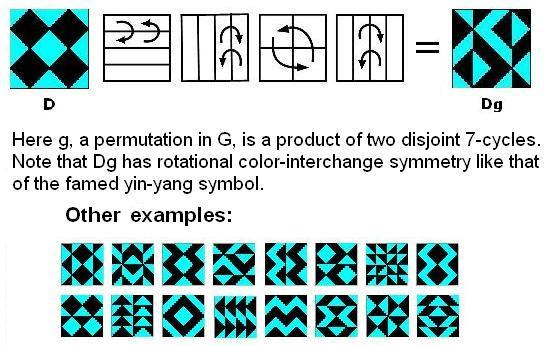

| Finite
Geometry Notes |
(Or, equivalently, as a linear combination of three 2-colorings (into GF(2) as a subfield of GF(4))).
How this works:
Let m be a map into a 4-set.
Represent the elements of the 4-set by the elements
Define f(x,y), where x, y are elements of
f = 1f(a,b) + af(1,b) + bf(1,a)
A modest generalization of the decomposition theorem, and a problem disguised as a query, are given by the 1982 research note below.
View original 1982 note.
Example:
|
Application of
Four-Color Decomposition: The Diamond Theorem We regard the four-diamond figure D below as a
4x4 array of two-color diagonally-divided square tiles.
Let G be the group of 322,560 permutations of these 16 tiles generated by arbitrarily mixing random permutations of rows and of columns with random permutations of the four 2x2 quadrants. THEOREM: Every G-image of D (as at right, below) has some ordinary or color-interchange symmetry. Example:  For an animated version, click here. |
For more on how the decomposition theorem
applies to the diamond theorem, click here.
Related material:
Orthogonal Latin
Squares as Skew Lines.
Page last maintained August 22, 2008; created Nov. 27,
2001.